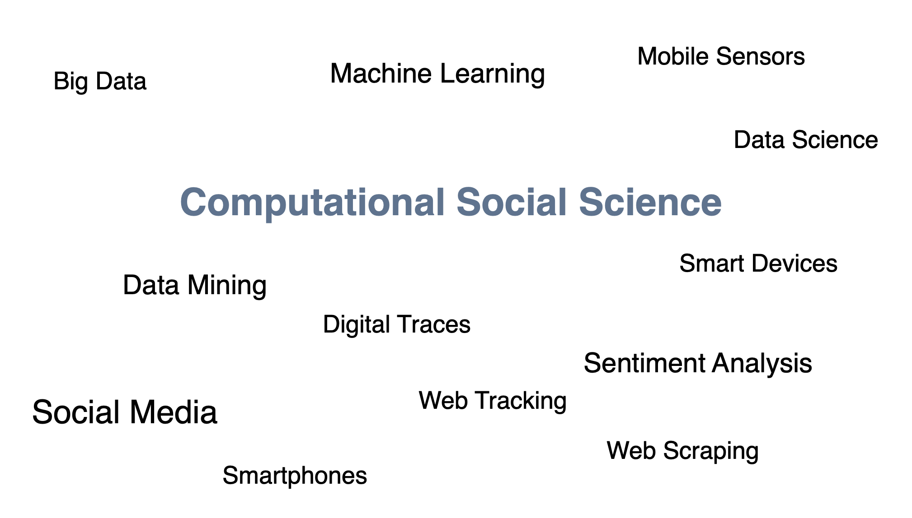
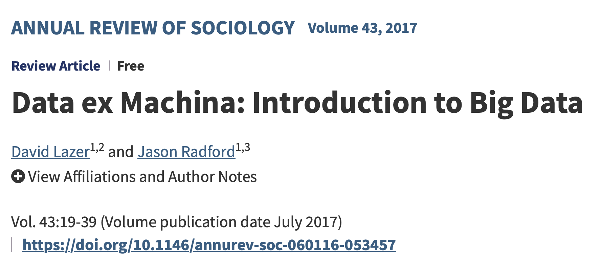
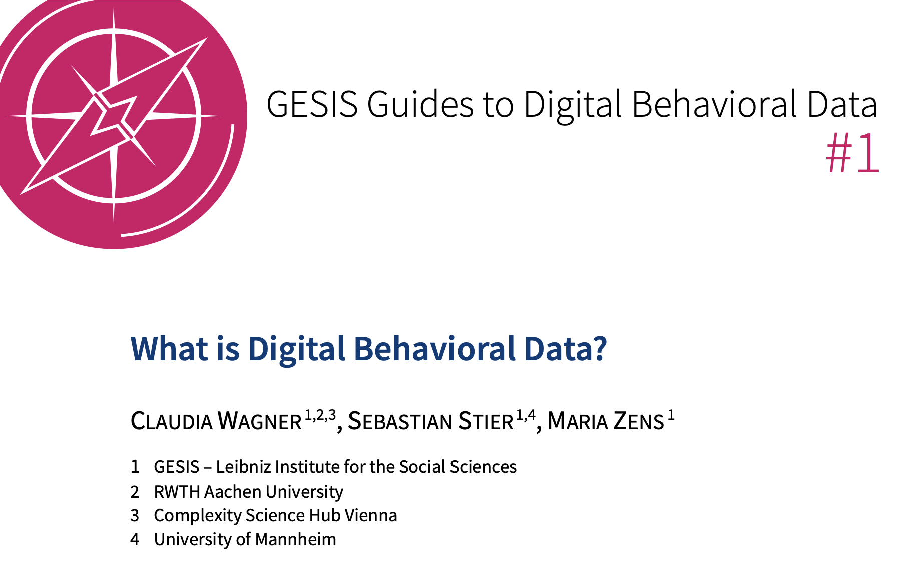
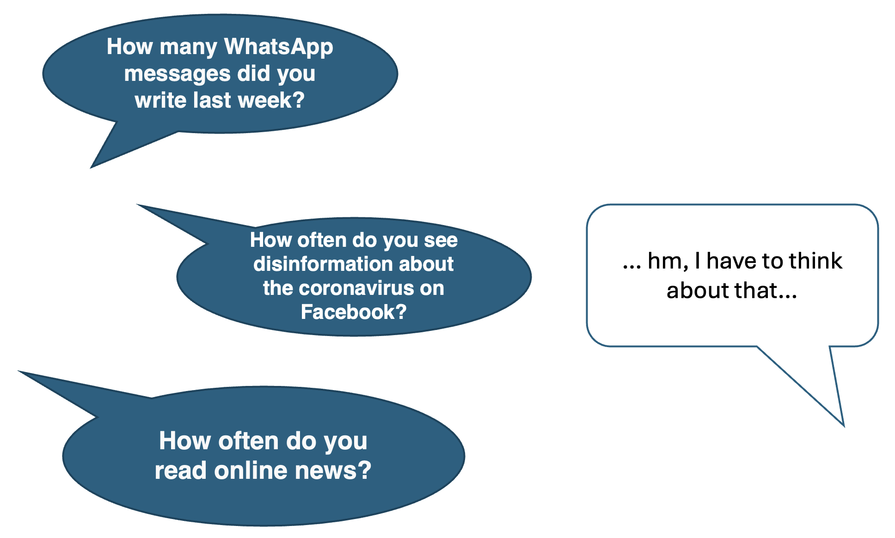
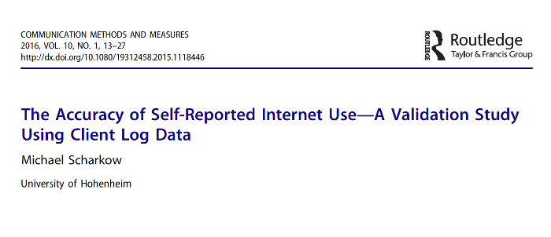
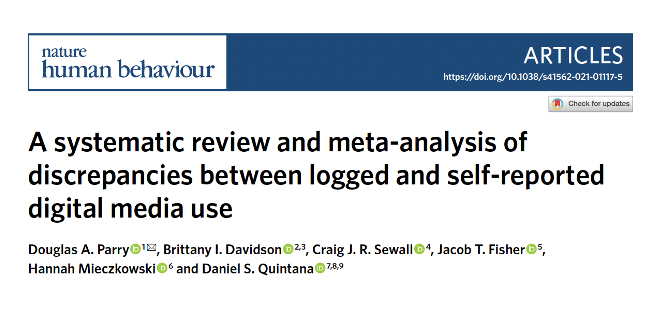
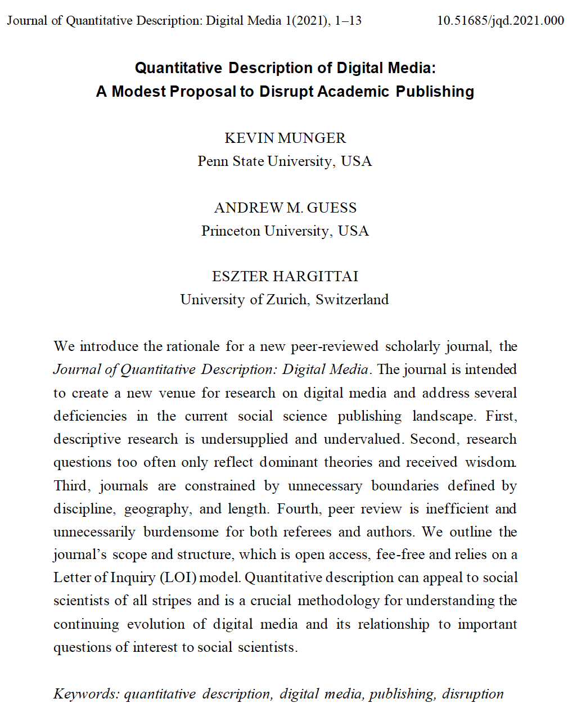
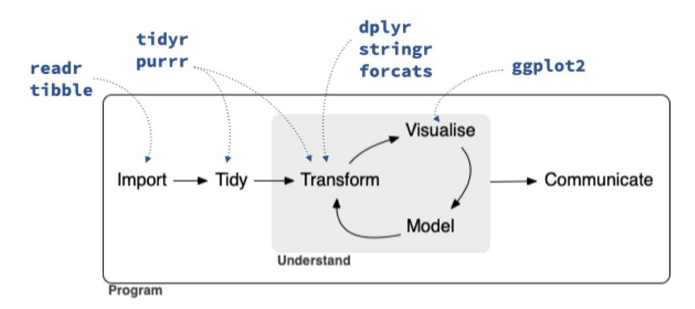

| Seminar dates and topics | ||
| Date | Topics | Required reading |
|---|---|---|
| 11 February 2026 |
|
|
| 18 February 2026 |
|
Lazer, D., & Radford, J. (2017). Data ex Machina: Introduction to Big Data. Annual Review of Sociology, 43(1), 19–39. Wagner, C., Stier, S., & Zens, M. (2025). What is Digital Behavioral Data? GESIS Guides to Digital Behavioral Data, 1. |
| 25 February 2026 |
|
Dash, A., Das, S., Kirsten, E., Wu, Q., Karnam, S. K., Gummadi, K. P., Holz, T., Zafar, M. B., & Zannettou, S. (2026). The Algorithmic Self-Portrait: Deconstructing Memory in ChatGPT. arXiv. University of Mannheim (2023). ChatGPT im Studium. AI-generated English translation. |
| 4 March 2026 |
|
Fiesler, C., & Proferes, N. (2018). ‘Participant’ Perceptions of Twitter Research Ethics. Social Media + Society, 4(1). Freelon, D. (2018). Computational Research in the Post-API Age. Political Communication, 35(4), 665–668. |
| 11 March 2026 |
|
Bak-Coleman, J., O’Connor, C., Bergstrom, C., & West, J. (2025). The Risks of Industry Influence in Tech Research. arXiv. Pierri, F., Araujo, T., Kruikemeier, S., Lorenz-Spreen, P., Abeele, M. M. P. V., Vandenbosch, L., Gonçalves-Sa, J., & Grabowicz, P. A. (2025). Research Opportunities and Challenges of the EU’s Digital Services Act. arXiv. |
| 18 March 2026 |
|
Mangold, F., & Stier, S. (2025). Overview of Working with Web Tracking Data. GESIS Guides to Digital Behavioral Data, 23. Silber, H., et al. Linking Surveys and Digital Trace Data: Insights From two Studies on Determinants of Data Sharing Behaviour. Journal of the Royal Statistical Society Series A: Statistics in Society, 185(S2), S387–S407. |
| 25 March 2026 |
|
Schwemmer, C., & Wieczorek, O. (2020). The Methodological Divide of Sociology: Evidence from Two Decades of Journal Publications. Sociology, 54(1), 3–21. Stuhler, O., Ton, C. D., & Ollion, E. (2025). From Codebooks to Promptbooks: Extracting Information from Text with Generative Large Language Models. Sociological Methods & Research, 54(3), 794–848. |
Foundations of Computational Social Science
Sebastian Stier
University of Mannheim & GESIS – Leibniz Institute for the Social Sciences
2026-02-18
Agenda for today
Introduction to Computational Social Science
R: Warmup session and introduction to the tidyverse
1. Introduction to Computational Social Science
Vast amounts of data

Think-pair-share
- Discuss the literature for today with your neighbor (5 min.)
- What is computational social science, what are digital behavioral data?
- What is the scientific benefit of CSS and what role do substantive research areas play in the two papers?
- Share your the results of your discussion in the class

Lazer, D., & Radford, J. (2017). Data ex Machina: Introduction to Big Data. Annual Review of Sociology, 43(1), 19–39.

Wagner, C., Stier, S., & Zens, M. (2025). What is Digital Behavioral Data? GESIS Guides to Digital Behavioral Data, 1.
Some definitions I
We define CSS as the development and application of computational methods to complex, typically large-scale, human (sometimes simulated) behavioral data (1). […] Whereas traditional quantitative social science has focused on rows of cases and columns of variables, typically with assumptions of independence among observations, CSS encompasses language, location and movement, networks, images, and video, with the application of statistical models that capture multifarious dependencies within data.
Lazer, D. M. J., et al. (2020). Computational social science: Obstacles and opportunities. Science, 369(6507), 1060–1062: 1060.
Some definitions II
Computational social science is an interdisciplinary field that advances theories of human behavior by applying computational techniques to large datasets from social media sites, the Internet, or other digitized archives such as administrative records. Our definition forefronts sociological theory because we believe the future of the field within sociology depends not only on novel data sources and methods, but also on its capacity to produce new theories of human behavior or elaborate on existing explanations of the social world.
Edelmann, A., Wolff, T., Montagne, D., & Bail, C. A. (2020). Computational Social Science and Sociology. Annual Review of Sociology, 46(1), 61–81: 62.
Digital behavioral data
“We call these research data “digital behavioral data” (DBD). DBD encompass digital observations of human or algorithmic behavior. DBD are generated (1) through interactions and content production online (e.g., on platforms such as Google, Facebook or websites on the World Wide Web) or (2) by software or sensors for recording specific processes (e.g., smartphones, RFID sensors, satellites, street view cameras, or web tracking).
Wagner, C., Stier, S., & Zens, M. (2025). What is Digital Behavioral Data? GESIS Guides to Digital Behavioral Data, 1.
How does CSS relate to established social science methods?

Measurement problems in the social sciences

“This study compares self-reports of Internet use with client log files from a large household sample. Results show that the accuracy of self reported frequency and duration of Internet use is quite low, and that survey data are only moderately correlated with log file data.”
Scharkow, M. (2016). The Accuracy of Self-Reported Internet Use—A Validation Study Using Client Log Data. Communication Methods and Measures, 10(1), 13–27.

“Based on 106 effect sizes, we found that self-reported media use correlates only moderately with logged measurements […] These findings raise concerns about the validity of findings relying solely on self-reported measures of media use.”
Parry, D. A., Davidson, B. I., Sewall, C. J. R., Fisher, J. T., Mieczkowski, H., & Quintana, D. S. (2021). A systematic review and meta-analysis of discrepancies between logged and self-reported digital media use. Nature Human Behaviour, 5, 1535–154.
Advantages of digital behavioral data
Digital behavioral data capture human behavior…
non-intrusively,
reliably,
with fine-grained and multi-dimensional features,
across time and contexts.
Downsides of digital behavioral data
But, digital behavioral data…
come in large volumes,
are unstructured,
are multi-dimensional (text, images, videos, audio, …),
are often produced and provided with minimal or no information on the data generating process.
\(\rightarrow\) Analyzing digital behavioral data in a scientifically meaningful way is an immense challenge
The role of theory and existing knowledge
“Our definition forefronts sociological theory because we believe the future of the field within sociology depends not only on novel data sources and methods, but also on its capacity to produce new theories of human behavior or elaborate on existing explanations of the social world.” (Edelmann et al. 2020: 62)
Explanation vs. description I

Munger, K., Guess, A. M., & Hargittai, E. (2021). Quantitative Description of Digital Media: A Modest Proposal to Disrupt Academic Publishing. Journal of Quantitative Description: Digital Media, 1.
“First and foremost, we respond to an undersupply of quantitative descriptive research in social science. Causal research that asks the question why has largely taken the place of descriptive research that asks the question what. Gerring (2012) diagnosed a general tendency to dismiss ‘Mere Description’ as a ‘mundane task … of little intrinsic scientific value,’ advocating instead that it be taken seriously as part of the general social scientific method.
We firmly agree. However, critique alone does not change the material conditions and incentives of practicing academics; we see this journal as a practical step towards raising the status of description as a method.” (Munger, Guess, and Hargittai 2021: 3-4)
Explanation vs. description II
Munger, K., Guess, A. M., & Hargittai, E. (2021). Quantitative Description of Digital Media: A Modest Proposal to Disrupt Academic Publishing. Journal of Quantitative Description: Digital Media, 1.
Second, rather than define our new venue in terms of existing disciplinary boundaries, we instead embrace a topical focus on digital media, broadly construed. We argue that the centrality and dynamism of digital media — information and communication technologies, including social media, that increasingly structure the way people interact with the world — necessitates increased scholarly energy devoted to sustained, continuous, quantitative description. […]
Today, there are more hours of video uploaded to YouTube every day than were broadcast in the 1950s U.S. in a year. The daily content of Twitter is different (and different in unpredictable ways) than it was the day before.” (Munger, Guess, and Hargittai 2021: 3-4)
Examples of novel sociotechnical phenomena
- Harmful online communication
- E.g., misinformation and deception
- E.g., violent language, harassment, racism
- Algorithmic influence, bias and discrimination
- Filter bubbles and echo chambers
- Social bots
- Virality of online content and memes
- Online inequalities
2. Warmup session in R and introduction to the tidyverse
tidyverse: the Swiss Army knife of R

Çetinkaya-Rundel, M., et al. (2021). An educator’s perspective of the tidyverse. arXiv Preprint.
Introduction to tidyverse: https://www.tidyverse.org/packages
Before we really get started with coding…
A simple ggplot figure.
Alternatives
Luckily, there is guidance: https://style.tidyverse.org/index.html
Finally, some coding
- Go to https://sebastianstier.com/ma_css26/material.html
- Download 1_tidyverse.R and open it in RStudio
- We start with the first exercises together.
- I will answer questions and help.
Thank you for your attention! See you on February 25
References
Edelmann, Achim, Tom Wolff, Danielle Montagne, and Christopher A. Bail. 2020. “Computational Social Science and Sociology.” Annual Review of Sociology 46 (1): 61–81. https://doi.org/10.1146/annurev-soc-121919-054621.
Munger, Kevin, Andrew M. Guess, and Eszter Hargittai. 2021. “Quantitative Description of Digital Media: A Modest Proposal to Disrupt Academic Publishing.” Journal of Quantitative Description: Digital Media 1. https://doi.org/10.51685/jqd.2021.000.